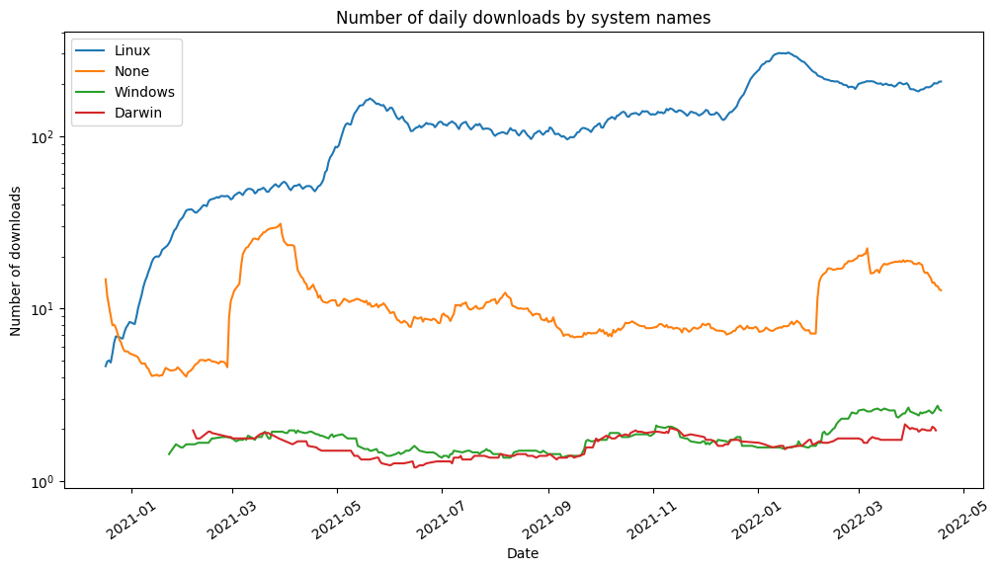
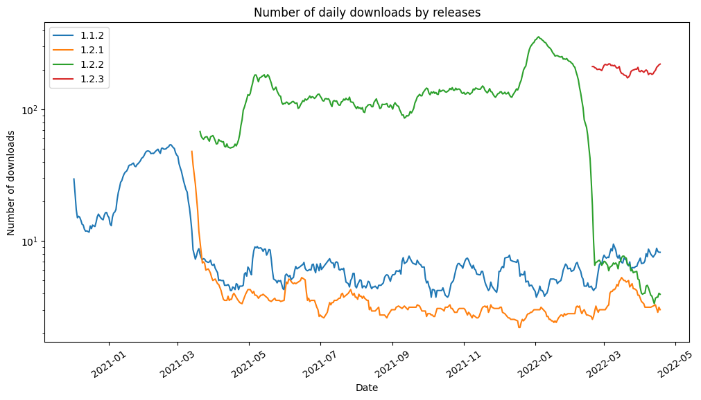
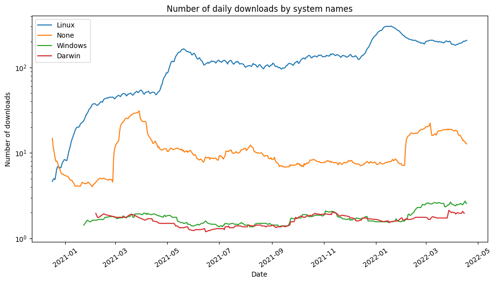
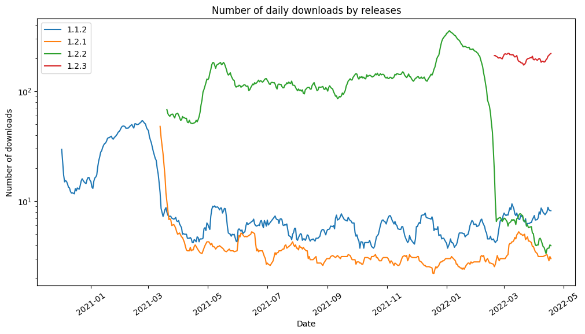

Pypi Downloads
Contents
Pypi Downloads¶
Downloaded from the python package index, that is described as a source here.
Entity Relationship Diagram (ERD)¶
What is an Entity Relationship Diagram (ERD)?
An entity relationship diagram (ERD) shows the relationships of entity sets stored in a database. An entity in this context is an object, a component of data, for example a variable. An entity set is a collection of similar entities. These entities can have attributes that define their properties.
By defining the entities, and their attributes, and showing the relationships between them, an ER diagram illustrates the logical structure of databases.
Each table demonstrates an entity set, where the rows represent the entities. Each entity set contains a primary key (PK) which is unique in the table. A primary key can be one entity, for example, a tax number or a set of entities like longitude and latitude in spatial data.
An entity set may have got a foreign key (FK). It means that the table is connected to another table’s primary key. This relationship can be represented by a line with a sign on its every ending. The sign specifies how many instances of an entity relate to one instance of another entity:
double lines (one)
branching line (more)
Exploratory Data Analysis (EDA)¶
What does exploratory data analysis contain?
These are some summaries of the initial analyses we conducted on the tables of the dataset. They are based on our ideas that we think can be further explored in a research project.
The exploration notebooks can be checked by clicking on the Open Notebook button. If you just want to see the output figures of the analysis, then open them with the Figures button.
 




Tables¶
How should I use this?
Table information
Each table has a Table Profile, generated by pandas-profiling. This includes descriptive statistics based on the table data and metadata, which can save significant time during the pre-analysis. Each profiling contains descriptives of the variables and additionally may show interactions, correlations, missing data information, and samples of the data. To see the profiling click on Open Table Profile.
Furthermore, you can check the first 5 rows of the tables by clicking on the First 5 rows button.
Download links
The table data can be downloaded in CSV format with Download CSV button. Before this step, we recommend checking the table profile!
Updating information
Some datasets are updated periodically. In this case, you can check the updating period at the top of this section.
There is 1 table
Size: 69586 × 15 (9.22 MB)
Last Changed: 2022-06-07 15:15
Sources¶
project url: https://github.com/sscu-budapest/softwaredata